Evolution and Vision
William F. Broderick
2017-04-17
Overview
Why is rodent visual system so different from human and what does that mean for vision?
- Eyes
- Of mice and men
- Why maps?
What's the point of vision?
"If the question is how the brain leads to behavior, we are first asking why is the brain performing this behavior and then asking how is it doing it" – Krakauer et al, 2017
Light-controlled behaviors
- Behaviors controlled by ambient light (circadian rhythms)
- Behaviors based on directional light (phototaxis)
- Tasks requiring low spatial resolution (object avoidance, orientation to sun)
- Tasks requiring high spatial resolution (detection and pursuit of prey, recognition of individuals)
Light-sensitive organs
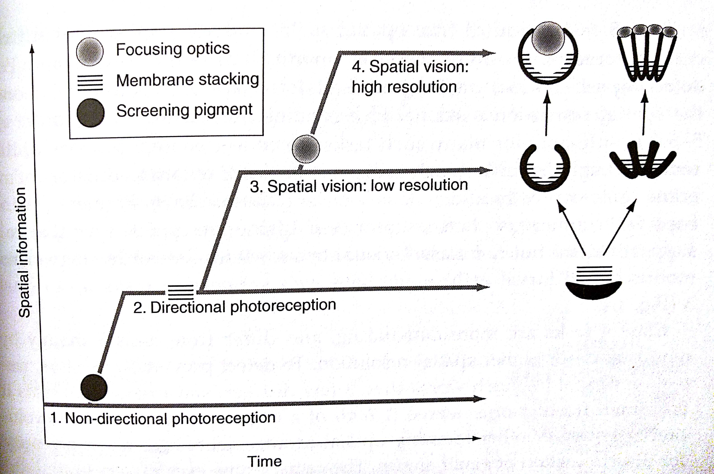
Parallel evolutions of eyes
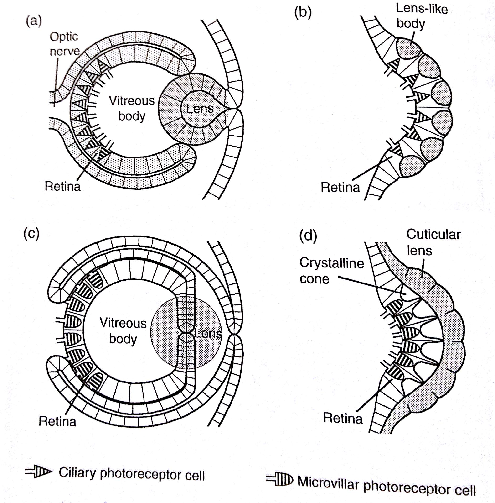
Eye properties
- Resolution: how finely the optical environment is sampled
- Sensitivity: how many photos your receptors receive
To make either one better: increase eye size
OWLS

OWLS
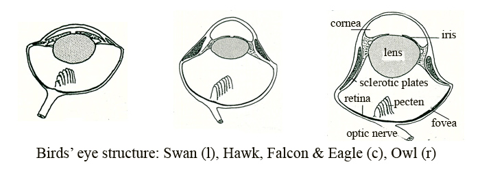
Pupils and light levels
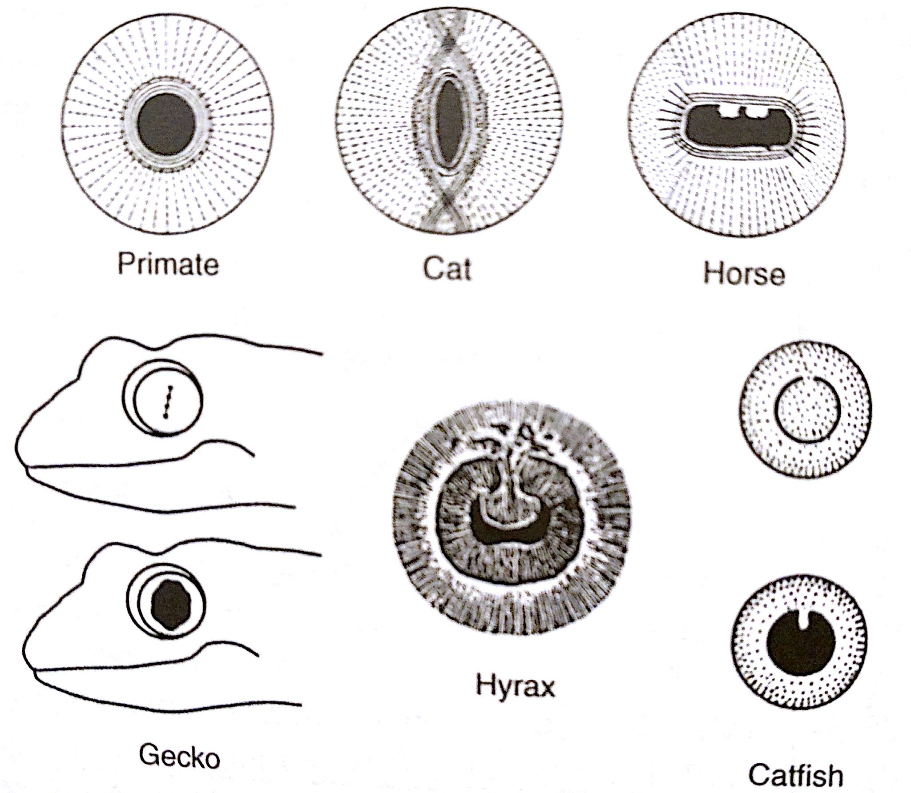
Binocular vision
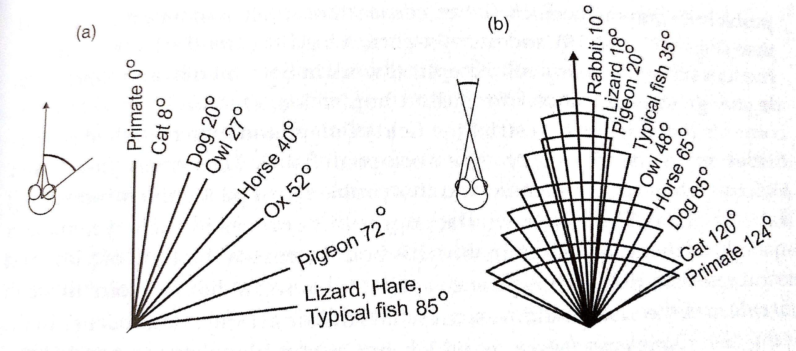
Ganglion cell distribution
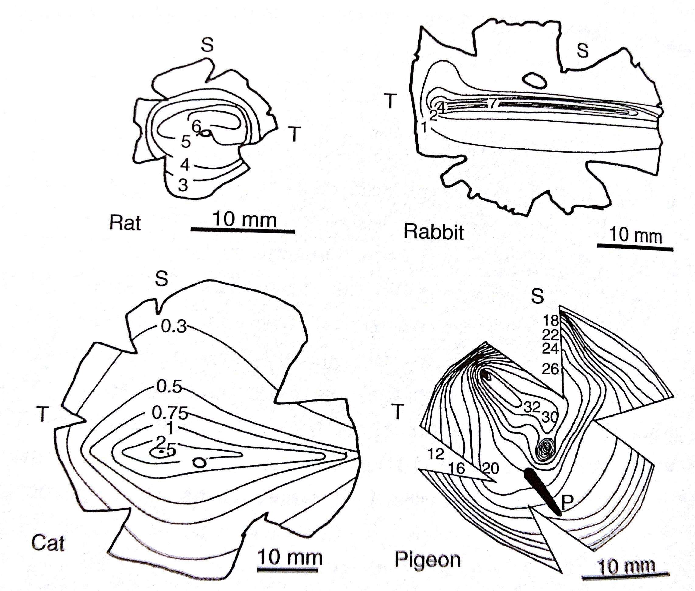
Hawk acuity
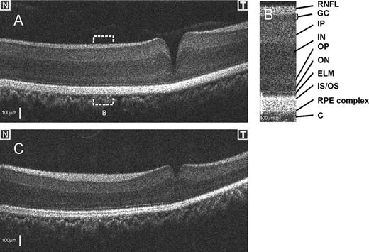
How similar is mouse vision to primate vision?
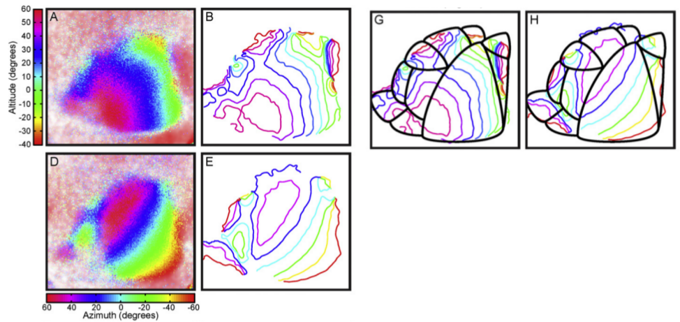
Ventral visual stream?
Receptive field size
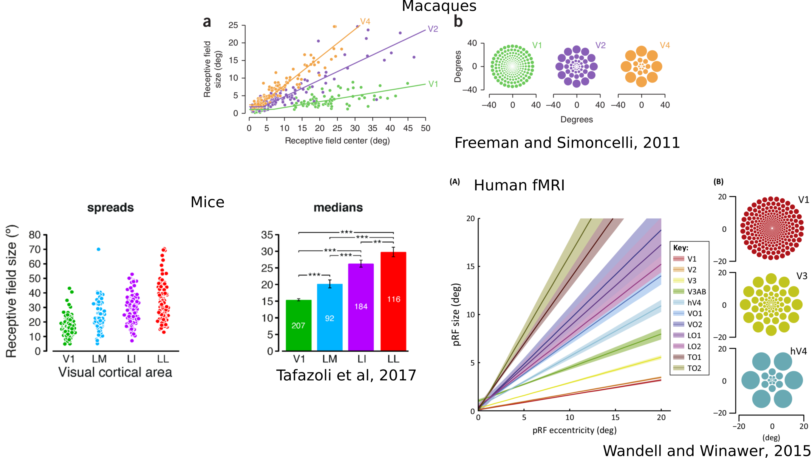
Decoding object identity from mice
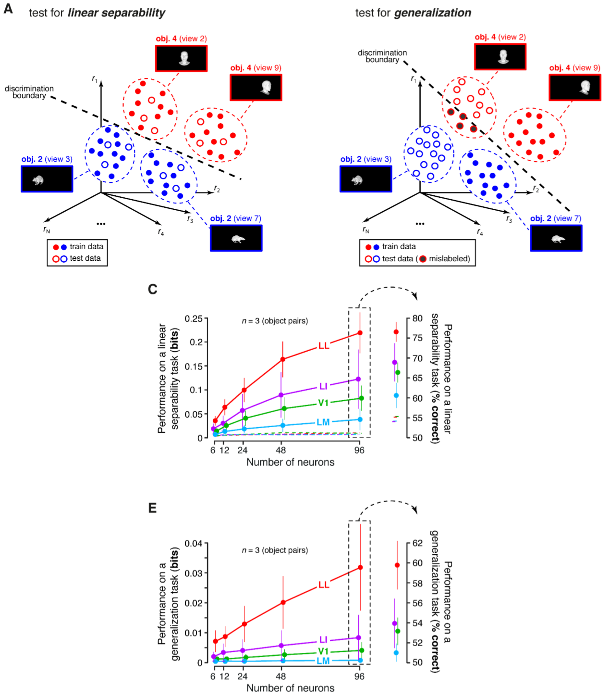
Decoding object identity from macaques
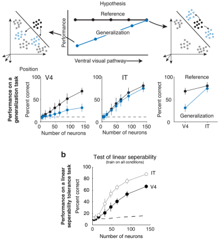
Mouse V1 orientation preferences inherited from LGN
Cross-species differences
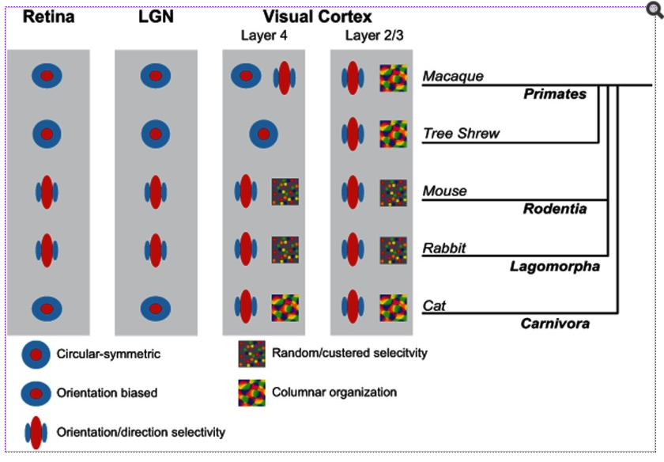
WHY MAPS?
Minimizes wiring cost
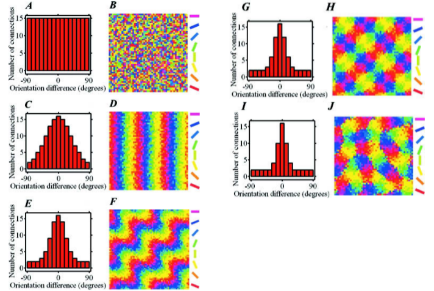